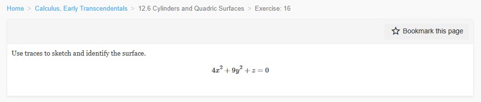
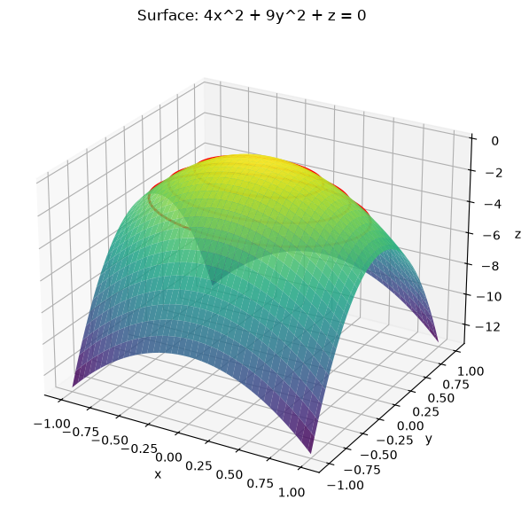
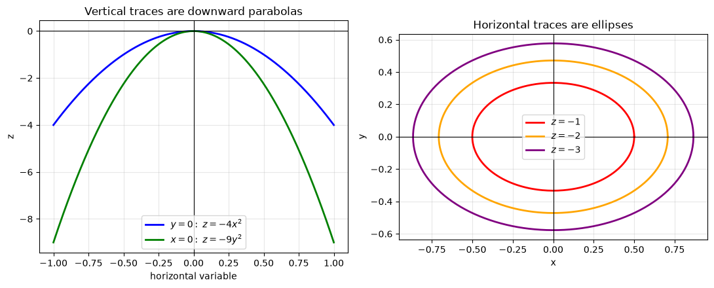
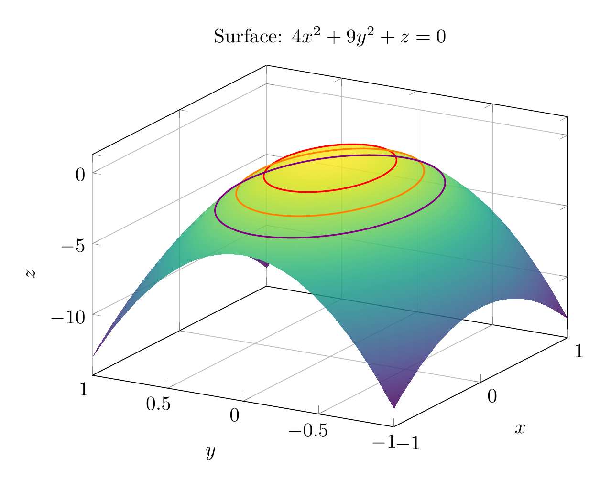
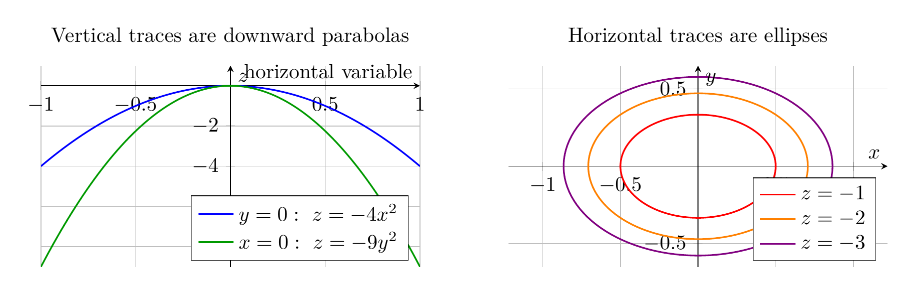

Path: mcma-Nex-N2-Pro/calculus-12.6.16/chat_20260824_174047_716746_utc_0800
Problem
Please solve the math problem in the image.

End of problem
Answer
Rewrite the equation by solving for \(z\):
\[
4x^2+9y^2+z=0 \quad\Longrightarrow\quad z=-4x^2-9y^2.
\]
Now use traces.
Horizontal traces \(z=c\):
\[
4x^2+9y^2=-c.
\]
For \(c<0\), this is an ellipse centered at the origin:
\[
\frac{x^2}{(-c)/4}+\frac{y^2}{(-c)/9}=1,
\]
with \(x\)-semiaxis \(\sqrt{-c}/2\) and \(y\)-semiaxis \(\sqrt{-c}/3\). For \(c=0\), the trace is the single point \((0,0,0)\), and for \(c>0\), there is no real trace.
Vertical traces:
\[
y=0 \implies z=-4x^2,
\]
\[
x=0 \implies z=-9y^2.
\]
Both are downward-opening parabolas. Thus the surface has vertex at the origin, opens downward along the \(z\)-axis, and has elliptical horizontal cross-sections.
\[
\boxed{\text{The surface is an elliptic paraboloid opening downward along the }z\text{-axis, with vertex }(0,0,0).}
\]
---




\documentclass[border=10pt]{standalone}
\usepackage{pgfplots}
\pgfplotsset{compat=1.18}
\begin{document}
\begin{tikzpicture}
\begin{axis}[
width=10cm, height=8cm,
xlabel=$x$, ylabel=$y$, zlabel=$z$,
title={Surface: $4x^2+9y^2+z=0$},
view={-60}{25},
domain=-1:1,
y domain=-1:1,
samples=35,
samples y=35,
colormap/viridis,
grid=major
]
\addplot3[surf, shader=interp, opacity=0.85] {-4*x^2-9*y^2};
\addplot3+[domain=0:2*pi, samples=120, no marks, thick, red]
({sqrt(1/4)*cos(deg(x))},{sqrt(1/9)*sin(deg(x))},{-1});
\addplot3+[domain=0:2*pi, samples=120, no marks, thick, orange]
({sqrt(2/4)*cos(deg(x))},{sqrt(2/9)*sin(deg(x))},{-2});
\addplot3+[domain=0:2*pi, samples=120, no marks, thick, violet]
({sqrt(3/4)*cos(deg(x))},{sqrt(3/9)*sin(deg(x))},{-3});
\end{axis}
\end{tikzpicture}
\end{document}

\documentclass[border=10pt]{standalone}
\usepackage{pgfplots}
\usepgfplotslibrary{groupplots}
\pgfplotsset{compat=1.18}
\begin{document}
\begin{tikzpicture}
\begin{groupplot}[
group style={group size=2 by 1, horizontal sep=1.5cm},
width=8cm, height=5cm,
axis lines=middle,
grid=major,
enlargelimits=false
]
\nextgroupplot[
xlabel={horizontal variable},
ylabel={$z$},
title={Vertical traces are downward parabolas},
legend pos=south east,
xmin=-1, xmax=1,
ymin=-9, ymax=1
]
\addplot[blue, thick, domain=-1:1, samples=100] {-4*x^2};
\addlegendentry{$y=0:\ z=-4x^2$}
\addplot[green!60!black, thick, domain=-1:1, samples=100] {-9*x^2};
\addlegendentry{$x=0:\ z=-9y^2$}
\nextgroupplot[
xlabel={$x$},
ylabel={$y$},
title={Horizontal traces are ellipses},
axis equal,
xmin=-0.9, xmax=0.9,
ymin=-0.65, ymax=0.65,
legend pos=south east
]
\addplot[red, thick, domain=0:360, samples=120] ({sqrt(1/4)*cos(x)},{sqrt(1/9)*sin(x)});
\addlegendentry{$z=-1$}
\addplot[orange, thick, domain=0:360, samples=120] ({sqrt(2/4)*cos(x)},{sqrt(2/9)*sin(x)});
\addlegendentry{$z=-2$}
\addplot[violet, thick, domain=0:360, samples=120] ({sqrt(3/4)*cos(x)},{sqrt(3/9)*sin(x)});
\addlegendentry{$z=-3$}
\end{groupplot}
\end{tikzpicture}
\end{document}

End of answer